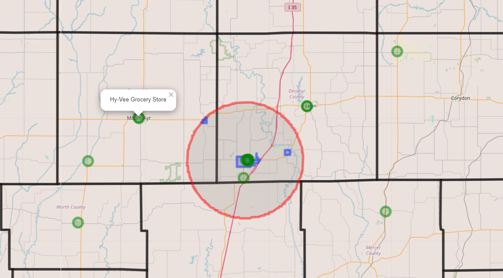

Estimating Market Size
One of the main functions of the app is estimating the market size, so we can figure out how many people would potentially shop at the proposed store. Using geospatial and demographic data we were able to make a model to generally estimate how many shoppers might be in the store’s market area.

This is the map being generated by the R Shiny scipt after being given an address. Blue regions denote city boundaries, and green circles show store locations.
The estimating market size section is broken down into three main components: metro population, rural population, and cities population.
Population Functions
TidyCensus
TidyCensus is a package that allows developers to easily retrieve and work with data from the US Census Bureau. The Census Bureau conducts the decennial census every ten years, which is a complete count of the population. They also do a annual survey called the American Community Survey, which is a sample of the population taken with a greater level of socioeconomic detail.
Metro Population
Metro Population is the population of the city that the potential store would be in. This function uses the parsed address to select just the city the store is out of a data frame containing the population of all the towns in the county that the store is in.
Cities Population
Cities Population is all the nearby cities populations. This function uses a TidyCensus call to find the population of all the cities in the state, and then filters it down to be just the cities in our area. It then takes the sum of all the city populations to determine how many people are in nearby towns.
Rural Population
Rural Population is the population of all people who live in the market area but do not live in a town. This is calculated by finding the population of the whole county, and subtracting the people who live in all the towns in that area, then multiplying by the percentage of the county the area covers.
Market Area
The area calculations used in our functions are derived by finding the distance to the nearest store in each quadrant (NE, NW, SE, SW). We divide that distance by two to account for the other store’s market area, then we use that distance as the radius of a quarter circle to figure out how much reach the store has. A more elegant solution to this would be Voronoi polygons, Reilly’s Law of Retail Gravitation, or Huff’s Model.
Future potential steps
Voronoi
A Voronoi diagram is a way of partitioning a plane into cells where all points within the cell are closer to a given seed, or in our case a store, than any other seed. Implementing these would be beneficial in order to get a more accurate model that scale to the number of neighboring stores.

Reilly’s
Reilly’s law is an economic principle that states that people are more drawn to areas with a higher population than those with smaller populations. This is an excellent way to estimate market area, but is somewhat complicated. Maps are usually edited by hand to account for geographic barriers such as rivers, and there are various limitations such as the populations of the two cities having to be relatively similar.
Huff’s Model
Huff’s law is a probabilistic model for estimating consumer attraction. It states that the attractiveness of a store and the something called distance decay determine the likelihood of someone visiting the store. Distance decay is the idea that as people move farther and farther away, the likelihood exponentially decreases that they would visit the store. In the real world this would mean that even though a store might be 10 times more attractive than another, if it is 10 times farther away, they most likely will not travel to it.
Design Decisions
When designing our product, we created a strengths, weaknesses, opportunities, and threats matrix to decide what software we should use. For the back-end code we decided to go with R as it is the industry standard for data science, and it is easy to integrate with our front-end. For the front end we went with R Shiny. We went with Shiny because of the clean, easy to set up webpages with intuitive user interfaces. It allowed us to make sliders to let users manually change variables to better fit their circumstances. Another feature of Shiny is its ability to incorporate maps, which we are using in our product to display the market area.